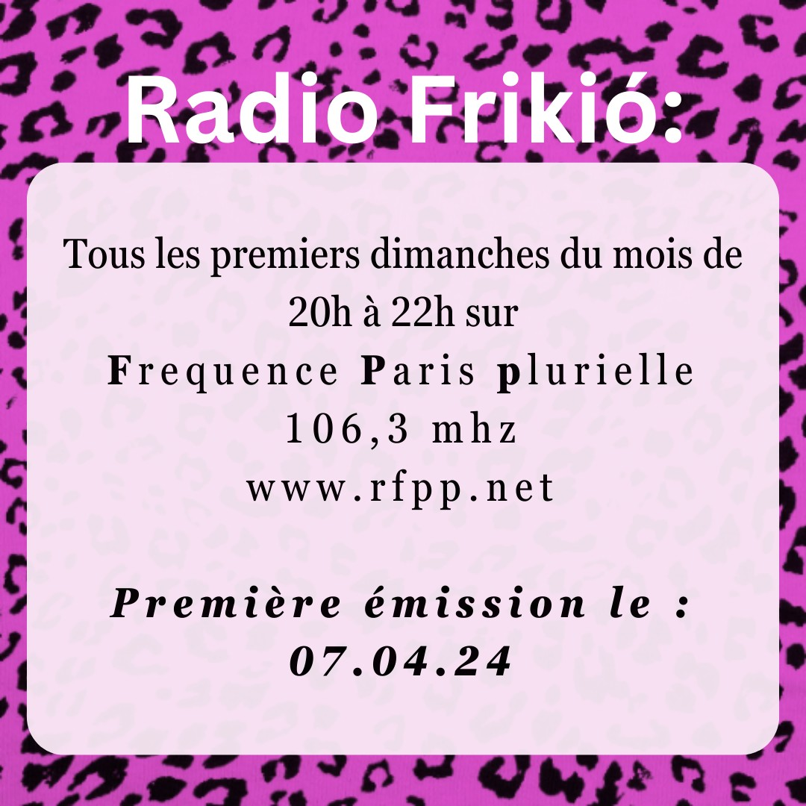

Radio Frikiò
Nos mamies nous appelaient les frikià. On est les personnes avec la boucle d’oreille, les marginaux.ales, les montré.es du doigt dans nos villages et quartiers, les antisystémiques. Les gosses qui ont grandi dans ce territoire qu’ils appellent la Grèce, et on décide de vous transmettre ce qui se passait là où on a formé nos souvenirs. À travers notre émission radio, Radio Frikiò, sur Radio Fréquence Paris Plurielle, on partage avec vous les luttes d’avant et de maintenant.
Οι γιαγιάδες μας μας λέγανε φρικιά. Είμαστε τα άτομα με το σκουλαρίκι, τα περιθωριακά, τα δαχτυλοδειχτούμενα στα χωριά μας, στις γειτονιές μας, τα αντιδραστικά. Τα παιδιά που μεγαλώσανε στον ελλαδικό χωρο, και σας μεταφέρουνε τους αγώνες και το τι γίνεται εκεί που χτίσανε αναμνήσεις. Μέσω της ραδιοφωνικής εκπομπής μας, Radio Frikiò, μέσα από τις συχνότητες του Radio Fréquence Paris Plurielle, σας μεταφέρουμε τους αγώνες που έγιναν και γίνονται.